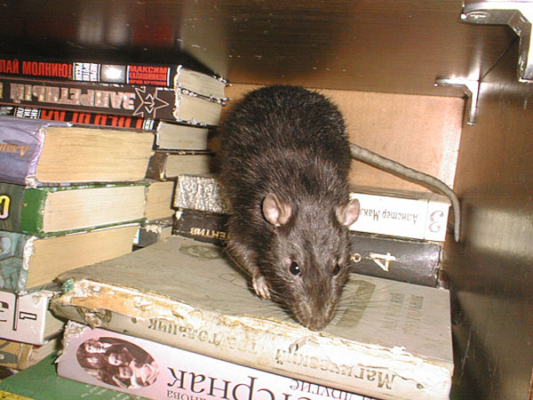
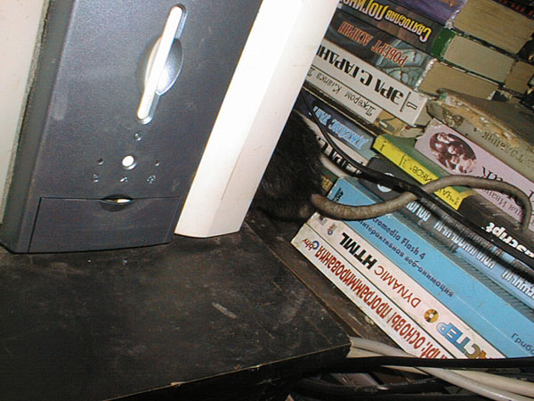
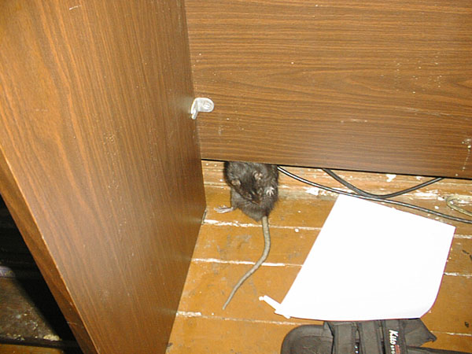
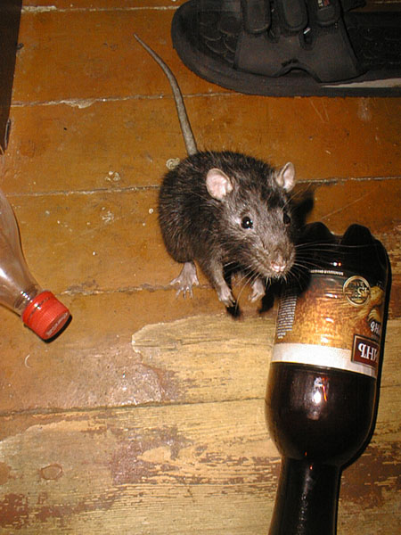
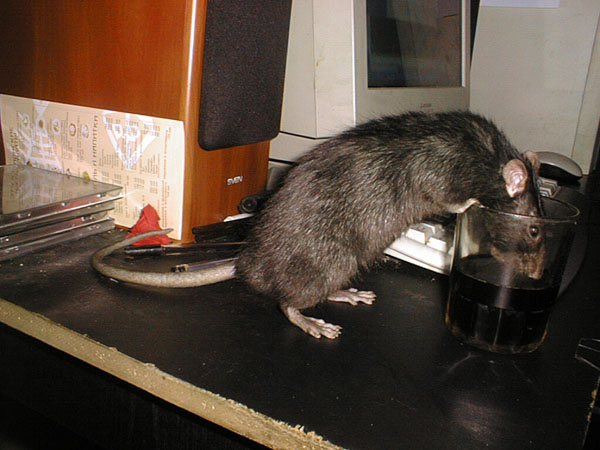
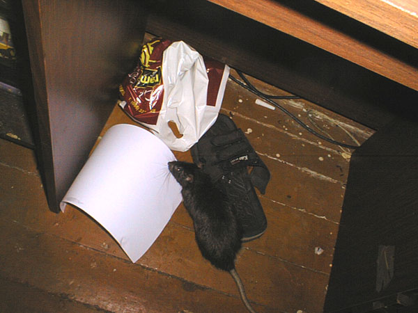
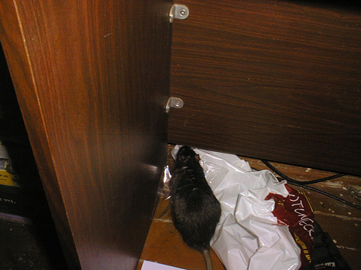

Джет Сильвер
Январь 05

— Норку в одеяле вырыть, что ли...

— Я тут немного книгу почитаю, ага?

— Ой, а что это у меня сзади?

— Сколько раз повторять — я стеснительный!

— Не понял. В таких красных пробочках йогурт дают и пиво, это я знаю. А что это на нее навернули и зачем?

— За шкафом — грязно, и надо умыться. Почему до, а не после? А я откуда знаю — я вам крыс, а не философ!

— Кажется, когда радикулит, то ходят в такой позе?

— А можно еще бутылочку?

— Да, я опять пью из стакана!

— И вообще — неужели нет другого времени снимать? Примут еще за алкоголика...

В засаде. Вид сверху.

— Этот листочек пригодится за шкафом. У меня там Гнездо!

— Эй, вы там где? Помогите кто-нибудь пакет за шкаф засунуть!

— Ладно, сам справлюсь...